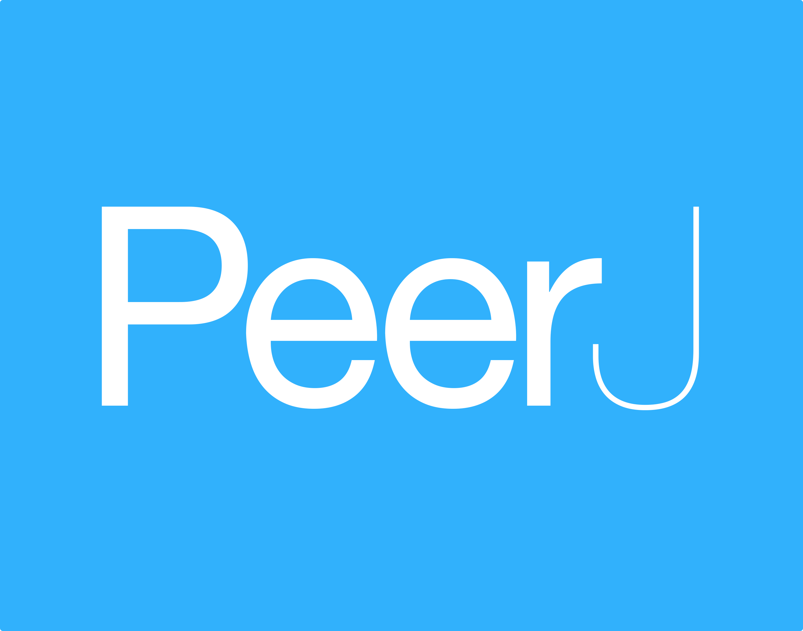
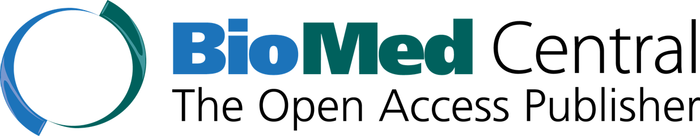
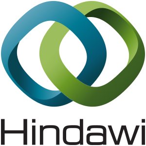
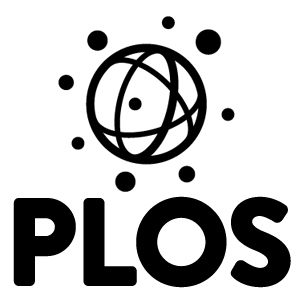

Reduce publishing costs
Open publishing can be low-cost to no-cost.

Don’t have money for high publishing fees? Don’t worry. There are many ways to reduce costs and make open publishing affordable. In some cases, publishing openly can cost the same or less than traditional publishing.
How can you reduce costs?
1. Find a no-cost open access journal
As of 2014, over 70% of journals indexed in the Directory of Open Access Journals did not charge authors to publish. For reference, see this article by West et al. on "cost effectiveness of open access publications".
Notable examples of open access journals who do not currently charge fees include:
2. Find a low-cost open access journal
Many open access journals charge publishing fees of less than $500 (U.S. dollars). These fees are often lower than the submission, page, and color figure charges levied by many subscription journals.

PeerJ has lifetime publishing plans
from $99 per author.
SAGE Open charges
$395 per article.
Ubiquity Press open access journals
average ~$500 per
article.
3. Request a waiver
Do you work in a country classified by the World Bank as low income or lower-middle income? You may be eligible for an automatic full or partial fee waiver at many open access journals.
red - low income. (Note: Image based on 2008 data, some countries may have changed status.)
But it's important to note that researchers in any country can request a fee waiver if unable to pay.
Examples of publisher fee waiver policies (non-exhaustive list):

BioMed
Central’s open
access waiver fund

Hindawi’s waiver
policy
PeerJ’s fee waiver
policy

PLOS’s
Global
Participation Initiative
4. Check if your institution has an open access publisher membership
Memberships can cover some or all the publication costs for authors belonging to that institution. Check with your library!
Examples of publishers offering institutional memberships (non-exhaustive list):
BioMed
Central has several
different types
of membership. Search the
member list by
country.
F1000Research
offers prepay
institutional packages with varying discounts.
Find out
about Hindawi memberships, and search the list of
member
institutions.
Learn
about PeerJ's
institutional
plans and check if your institution is listed.
PLOS
offers
an
institutional fee support program.
5. Check if your institution has an open access fund
An increasing number of institutions are providing funds for students and faculty to publish in open access journals. Refer to this 'Open Access Funds' resource from SPARC, particulary the 'Funds in Action' [pdf]. Or, see this searchable database from PLOS. You can also check with your library.
6. Talk with your funding agency
Many funders now provide open access publishing fee assistance. Searchable databases from Nature or from PLOS allow authors to search by country for funders with such programs.
For researchers in the UK, the Charity Open Access Fund – a collaboration between Arthritis Research UK, Breast Cancer Now, the British Heart Foundation, Cancer Research UK, Bloodwise, Parkinson’s UK and the Wellcome Trust – provides grants to institutions to cover OA publishing fees. You can check recipient institutions. Research Councils UK also provides block grants to institutions to cover OA fees. Check this list of recipients [pdf].
Many funders also allow researchers to write publishing fees directly into their grants.
7. Self-archive your work openly
Want a modifiable slide to sum up these options?
Get better value for your money
Remember…publishing with many subscription journals is not free. There are submission fees, page charges, costs for color figures. And what do you get for your money? Paywalled content that many can’t access, and you often have to ask permission from the publisher to reuse your own work.
With open publishing, you retain your author rights and the world can read your work - that's better value for your money!